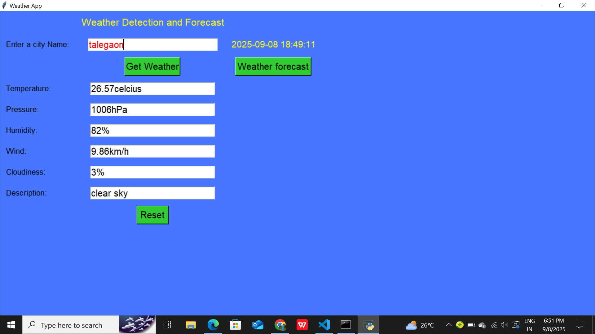

About Me
I am a Computer Engineering student with a strong passion for Python development and data analytics. I have maintained consistent academic performance with an SGPA of 8.52 and gained practical industry exposure through internships and technical club activities. I am continuously learning and exploring new technologies through hands-on projects. I am eager to connect, collaborate on exciting opportunities, and grow as a professional in the tech industry.
Technical Skills
Projects
🚀 Resume Analysis Using ATS
This project is an automated resume screening tool. It extracts text from PDF and DOCX resumes using NLP techniques. Resumes are compared with job descriptions to calculate an ATS Score. Based on the score, candidates are ranked for shortlisting. The final results are exported in CSV format for recruiters.
🎯 Outcome: This project simplifies resume shortlisting, reduces manual effort, and helps recruiters make faster, data-driven hiring decisions.

🚀 AI Healthcare & Fitness Advisor
This project analyzes user inputs like height, weight, and age. It calculates BMI to determine the user’s fitness level. Based on BMI, it suggests personalized diet and workout plans. The system helps users track and improve their health. It provides simple and practical fitness guidance.
🎯 Outcome: The project helps users track their fitness, follow healthier habits, and make informed decisions about their well-being.

🚀 Weather Forecast App
This is a web-based real-time weather application. It fetches live weather data using an API. Users can check temperature and weather conditions. The interface is simple and user-friendly. It demonstrates API integration and web development skills.
🎯 Outcome: The project enables users to access accurate weather updates instantly and showcases practical implementation of API integration.
